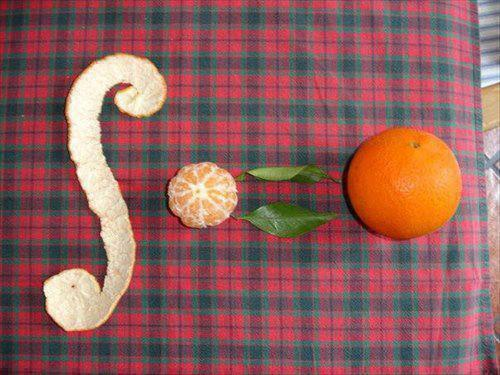

Today: Law of Large Numbers
Goal: start to understand error as it relates to sample size
Objectives:
- Distribution of the mean \(\bar{X}_{n}\)
- Chebyshev’s Inequality
- Law of Large Numbers
i.i.d.
Let \(X_{1}, X_{2}, X_{3}, ...\) be an independent and identically distributed sequence of random variables (denoted ``i.i.d’’)
- each \(X_{i}\) is independent of each other
- each \(X_{i}\) has mean \(\mu\)
- each \(X_{i}\) has variance \(\sigma^{2}\)
Let us now seek the distribution of the mean
\[\bar{X}_{n} = \displaystyle\frac{X_{1} + X_{2} + ... + X_{n}}{n}\]
- expected value
- variance
Distribution of Mean
If \(\bar{X}_{n}\) is the mean of \(n\) independent and identical random variables, each with mean \(\mu\) and variance \(\sigma^{2}\), then we can describe the distribution of \(\bar{X}_{n}\) with
\[\text{E}[\bar{X}_{n}] = \mu \quad\text{and}\quad \text{Var}(\bar{X}_{n}) = \displaystyle\frac{\sigma^{2}}{n}\]
Far from the Mean
Idea: we can get a sense of the probability that, for a particular boundary location \(a\), an observation lies outside of the interval
\[(\mu - a, \mu + a)\]
- \(\mu\): population average
- \(a\): tolerance
Claim: \(P(|X - \mu| \geq a) \leq \displaystyle\frac{\text{Var}(X)}{a^{2}}\)
Chebyshev’s Inequality
For a random variable \(X\) and boundary location \(a\),
\[P(|X - \mu| \geq a) \leq \displaystyle\frac{\text{Var}(X)}{a^{2}}\]
That is, if we know the variance of a distribution, we can compute an upper bound for the probability of rare events!
Law of Large Numbers
The Law of Large Numbers basically combines Chebyshev’s Inequality with the earlier work for the distribution of the mean:
- \(\text{E}[\bar{X}_{n}] = \mu \quad\text{and}\quad \text{Var}(\bar{X}_{n}) = \displaystyle\frac{\sigma^{2}}{n}\)
- \(P(|X - \mu| \geq a) \leq \displaystyle\frac{\text{Var}(X)}{a^{2}}\)
Idea: What happens when we observe a lot of data?
Taking the limit as \(n\) goes to infinity, we arrive at the Law of Large Numbers:
\[\displaystyle\lim_{n \to \infty} P(|\bar{X}_{n} - \mu| \geq a) \leq \displaystyle\lim_{n \to \infty} \displaystyle\frac{\sigma^{2}}{a^{2} n} = 0\]
That is, the probability that the mean of a sample of random variables is ``far’’ from the inherent expected value eventually goes to zero.
Nerdy Example
How many numbers between zero and one do we have to add up to have a sum that is greater than one?
- Let \(X_{i} \sim U(0,1)\) be i.i.d.
- Let \(Y\) be the amount of \(X_{i}\) added together to get a sum greater than one
- For a conservative estimate, suppose \(Y \sim U(2,6)\), then
\[\text{Var}(Y) = \displaystyle\frac{4}{3}\]
- Empirically (i.e. computer simulation), we saw convergence toward
\[\bar{Y}_{n} = e \approx 2.7183\]
How many trials are needed so that the simulations converge to a mean within 0.01 of the true answer with at least 95 percent probability?
Looking Ahead
- WHW9
Final Exam will be on Dec. 8
